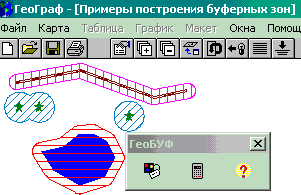
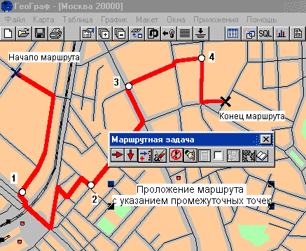
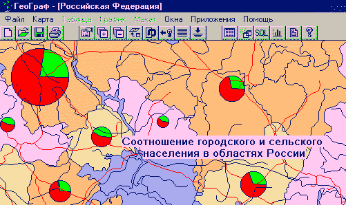
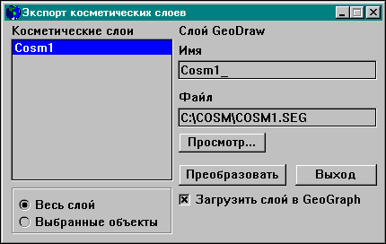

Все приложения построены на едином принципе совместной работы с ГеоГраф и не функционируют отдельно от него. Каждое из приложений использует выбранные пользователем исходные данные (слой, таблица, поле и др.) из загруженной композиции карты, позволяет задать настроечные параметры и производит расчет результатов.
И исходные данные и результаты являются теми же данными, которыми оперирует ГеоГраф. Поэтому отображение результатов и базовые функции ГИС не предусмотрены приложением. Приложение выполняет только расчет и формирование результатов, все остальное делает ГеоГраф.
Построение буферных зон
Последняя версия ГеоБуф.
Для работы ggbuf16
необходимо установить:
- BDE 16-ти разрядное и GeoConstructor 1.60.
Для работы ggbuf32
необходимо установить:
- BDE 32-х разрядное и GeoConstructor версии 2.0.93. - 2.0.97.
Буферная зона - это набор площадных объектов,
представляющих собой некоторую территорию
вокруг исходных объектов, такую что:
Другими словами, буферная зона это геометрическое место точек удаленных от исходного объекта на расстояние не более заданного.
Это метод решения аналитических задач обнаружения областей, удовлетворяющих (или не удовлетворяющих) некоторому заданному набору условий.
В качестве примера можно привести формирование полосы отчуждения вдоль автомобильных или железных дорог, трубопроводов, ЛЭП и. т. д.
Специальное приложение построения буферных зон формирует новый нетопологический слой, в который записываются полигоны представляющие буферную зону для выбранных пользователем объектов из активного слоя композиции карты, загруженной в ГеоГраф.
|  | Примеры построения буферных зон вокруг линейных, точечных и полигональных объектов. |
Определение оптимального маршрута между двумя точками
Последняя версия Маршрутной задачи
Исходные данные:
Приложение по метрической информации слоя строит граф возможных путей. Вершинами графа являются пересечения (перекрестки) линейных объектов, а дугами - их участки. Кроме того, вершинами графа являются начальная и конечная точки маршрута. Решается задача определения кратчайшего пути на графе, соединяющего заданные точки.
Обычно применяемые методы поиска кратчайшего пути на графе (например, алгоритм Дейкстры) просматривают большое число вершин, не учитывая при этом расположение конечной точки. Применительно к карте Москвы, имеющей густую дорожную сеть особенно в центре, это приводит к значительным временам решения задачи. В рассматриваемой программе реализован метод ветвей и границ, который позволяет управлять формированием дерева поиска. При оценке нижней границы стоимости пути через текущую вершину поиска учитывается расположение конечной точки. Метод является точным и находит оптимальный маршрут.
Определение оптимального порядка прохождения промежуточных точек
Последняя версия Маршрутной задачи
В отличие от предыдущей задачи кроме начальной и конечной точек маршрута заданы промежуточные, которые необходимо посетить во время следования по маршруту. Порядок прохождения промежуточных точек требуется определить исходя из критерия минимальной стоимости всего маршрута. Так называемая "задача коммивояжера" является комбинаторной. Общее число возможных решений равно N факториал, где N- число промежуточных точек.
При определении порядка прохождения точек необходимо вычислять оптимальные маршруты между соседними парами точек по предыдущему алгоритму. В процессе поиска решения таких вычислений может быть достаточно много, что потребует значительных затрат машинного времени. Таким образом, алгоритм должен быть направлен на уменьшение числа определения оптимальных маршрутов между парами соседних точек.
В данной программе реализован метод ветвей и границ. При этом, в отличие от предыдущей программы, сочетается поиск в глубину и в ширину. Для получения оценок нижних границ решения используется эвристическое правило, которое не требует вычисления оптимальных маршрутов. Оптимальные маршруты вычисляются лишь для перспективных решений, которые будут ветвиться.
Для сокращения размера дерева решений используется рекурсивная процедура исключения неперспективных решений.
За счет использования поиска в глубину практически всегда существует некоторое решение. До завершения процесса поиска это решение не оптимальное. В процессе поиска решения постепенно улучшаются. Из-за недостатка времени поиск может быть прекращен при достижении приемлемого качества. Таким образом, при большом числе промежуточных точек может быть получено приемлемое решение при разумных затратах машинного времени.

Построение картодиаграмм
Последняя версия программы создание диаграмных условных знаков.
Картодиаграммой называется способ отображения суммарной величины, а также ее структуры или динамики, какого либо явления в каждой единице территориального деления с помощью диаграмных фигур, выражающих эту величину и помещаемых внутри каждой такой единицы. Причем территориальное деление (чаще всего политико-административное) не связано прямо с отображаемым явлением. Карта в целом показывает распределение величины данного явления в пределах изображаемой территории. Способ картодиаграммы чаще всего используется на картах, составленных по статистическим данным, относящимся к единицам территориального деления (странам, республикам, областям, штатам и т. п. ). Например, на карте выборов президента России внутри изображаемой территории каждого субъекта федерации можно поместить диаграмму в виде круга, площадь которого выражает количество голосов избирателей отданных за того или иного кандидата. Разделив круги на несколько секторов можно показать процентное соотношение голосов отданных за разных кандидатов.
Специальное приложение позволяет создавать такие картодиаграммы. Для каждого объекта выбранного слоя генерируется столбчатая или круговая диаграмма по заданным полям таблицы. Пользователь может настраивать состав данных, цвета и размеры получаемых диаграмм. Таким образом достигается отображение соотношения числовых характеристик объектов на карте. Каждая диаграмма сохраняется в таблицу (в формате метафайла Windows) как бинарное поле и выводится на карту с помощью того же механизма, что и текстовые метки.

Построение изолиний и регулярной сетки.
Последняя версия ГеоФит
Программа ГеоФит - это алгоритмы и программы интерполяции на регулярную сеть и фильтрации случайных компонент самых различных характеристик, измеренных на нерегулярной сети наблюдений, универсальные относительно видов съемок, этапов их проведения, детальности и степени неоднородности исходной сети данных.
Программа работает под управлением операционных систем Microsoft Windows 3.1, Windows 3.11 for Workgroups, Windows 95, Windows NT версий 3.51 и 4.0 на PC AT совместимых компьютерах (80386 и выше) с графическим адаптером VGA/SVGA и соответствующим цветным монитором.
Основные возможности GeoFit for Windows v. 1.0:
Кроме того, предусматривается решение сформулированных выше задач в трехмерном варианте, когда наблюдения произведены в объеме или на произвольной поверхности.
Входные данные ГеоФит выбираются из загруженной карты и после расчета немедленно отображаются результаты, сформированные в виде отдельных слоев и таблиц, автоматически подключаемых к композиции карты.
Драйвер динамической сегментации.
Последнюю версию зарегистрированные пользователи
могут получить здесь.
ГИС часто представляет пространственные данные в двухмерном декартовом пространстве парами координат X и Y. Это удобно для цифрового описания большинства пространственных объектов, таких, например, как границы политико-админстративных областей, гидрографии, дорог, населенных пунктов и прочих объектов. Но в некоторых случаях требуется хранить и обрабатывать данные представленные как расстояние, отложенное вдоль по одному из существующих линейных объектов. Таким образом, местоположение объекта характеризуется относительной одноразмерной величиной. Например, 110 км шоссе E95, на котором находится придорожный объект, однозначно географически его позиционирует без наличия других данных, таких как широта/долгота или x,y координаты в любой другой системе. Многие базы данных хранят именно такие данные о расположении объектов на местности. Механизм динамической сегментации позволяет ГИС позиционировать, отображать и оперировать пространственными объектами, о которых известны только расстояние и содержащий их линейный объект, также как и другими объектами цифровой карты.
Используя механизм динамической сегментации вы можете:
Динамическая сегментация облегчает работу с данными, полученными в ходе проведения линейных измерений. Эти данные могут собираться и обрабатываться независимо от программного обеспечения ГИС. В любой системе или приложении, которое работает с данными линейных пространственных объектов, таких как дороги, реки, трубопроводы, кабельные линии потенциально можно повысить эффективность задач анализа и обработки данных, применив механизм динамической сегментации.
Примеры областей применения:
Механизм динамической сегментации основан на многоформатном доступе к данным ГИС ГеоГраф. Для представления слоя объектов динамической сегментации реализован специальный драйвер, ориентированный на такой источник данных.
Основные функции драйвера:
Драйвер динамической сегментации устанавливается и работает в ПО ГИС ГеоГраф также как и другие драйверы форматов данных.
Преобразования косметических слоев Географ 1.5 в векторные слои формата GeoDraw.
Последняя версия Cosmexp
Cosmexp -ГИС приложение, разработанное ЦГИ ИГРАН с помощью инструментария Геоконструктор и Borland Delphi.
Для работы cosmexp16
необходимо установить:
- BDE 16-ти разрядное и GeoConstructor 1.60
Для работы cosmexp32
необходимо установить:
- BDE 32-х разрядное и GeoConstructor версии 2.0.93. - 2.0.97. или GC 2.0.100
Программа является дополнительным приложением ПО ГеоГраф и работает только при установленном на компьютере ПО ГеоКонструктор 2.0.
Управление приложением
Приложение Cosmexp может быть запущено только во время сеанса работы в среде Географ. Необходимым условием для запуска приложения также является наличие загруженной карты Географ, содержащей как минимум один косметический слой. При удалении из карты всех косметических слоев или при закрытии самой карты, приложение прекращает работу и выгружается из памяти компьютера.
Для запуска приложения выберите пункты главного меню Файл - Запуск. В появившемся диалоговом окне Выполнить нажмите кнопку Просмотр и далее в стандартном диалоге выбора файлов Windows выберите файл Cosmexp.exe. Путь к файлу отобразится в командной строке текущего окна. Для продолжения нажмите кнопку Да.
Запустить Cosmexp Вы также можете через пункт Приложения главного меню Географ, предварительно прописав к нему путь в файле gisserver.ini (см. Руководство Пользователя Географ).
Главное окно приложения

В блоке Косметические слои отображаются все косметические слои, содержащиеся в Легенде (не зависимо от их включенности для отображения). Выберите слой для экспорта, т.е. исходный слой.
В следующем блоке выберите один из переключателей Весь слой или Выбранные объекты. В первом случае экспортироваться будут все объекты слоя, во втором - только выделенные.
При экспорте сохраняются пользовательские идентификаторы объектов и связь объектов с аттрибутивной таблицей. Загрузка результирующего (экспортированного) слоя и подсоединение таблицы к нему произойдет автоматически, если перед началом экспорта Вы включите выключатель Загрузить слой в GeoGraph. В противном случае, при последующем добавлении слоя в Географ, таблицу необходимо будет подключить самостоятельно.
В строке Имя задайте имя для результирующего слоя, с которым он будет отображаться в Легенде. Вы можете оставить имя, предложенное программой по умолчанию.
В строку Файл введите имя каталога (если такой каталог не существует, то он будет создан приложением автоматически), в который будет помещен файл результирующего слоя, а также его имя. Вы можете воспользоваться кнопкой Просмотр. Откроется стандартный диалог выбора файла для размещения данных слоя.
Важно! Если Вы укажете в качестве результирующего уже существующий файл, то программа произведет его перезапись с полной заменой содержащейся в нем информации, предварительно предупредив об этом:
При попытке записи в исходный файл текущего слоя программа выдаст предупреждение о невозможности данного действия:
При завершении всех установок нажмите кнопку Преобразовать главного окна программы для запуска операции экспорта.
В случае нормального завершения процесса появится сообщение об этом.